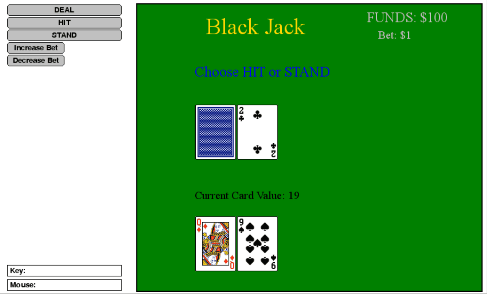

I created several games using Python, during an online course on interactive programming. Below are 2 of particular interest to me.
|
Made in python with pygame and simplegui packages. Card images obtained from simplegui package in codeskulptor. May consider editing the game to be multiplayer when I have the time. Code available here. |
 |
|
Made in python with pygame and simplegui packages Background, rocket and asteroid images obtained from simplegui package incodeskulptor Code available here. |